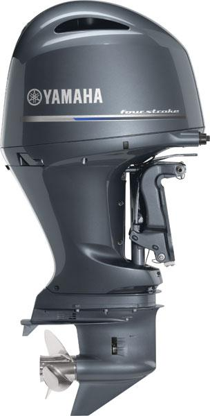

FUERA DE BORDA PORTABLE
Para aquellos que quieren potencia, rendimiento y portabilidad
Disponible en una gama de potencia de la F20 , a la F2.5 , incluyendo el F8 rediseñado con un 7,5 por ciento más desplazamientos, estos dínamos de 1 ó 2 cilindros proporcionan un gran rendimiento en los diseños aerodinámicos
- Increíblemente ligeros
- Fácil de cargar
- Máxima Maniobrabilidad
- Eficiencia de combustible
- Innovación inteligente

FUERA DE BORDA DE MEDIO RANGO
Para aquellos que confian en su tiempo
Su tamaño varía entre el poderoso F90 a la F25 ágil, que ofrecen sólo la cantidad correcta de energía para una variedad de aplicaciones . Estos apartamentos de 2 , 3 y 4 cilindros, de combustión limpia , intérpretes fiables

FUERA DE BORDA 4 EN LINEA
Para aquellos que quieren disfrutar de su conducción
Línea de diseños de cuatro cilindros e inyección electrónica de combustible, de peso fuerte , ágil , compacto y ligero, util para paseos en sky o pesca deportiva
- Aceleración increíble
- Potencia / Fiabilidad
- Actuación excepcional
- Vibración minimizada